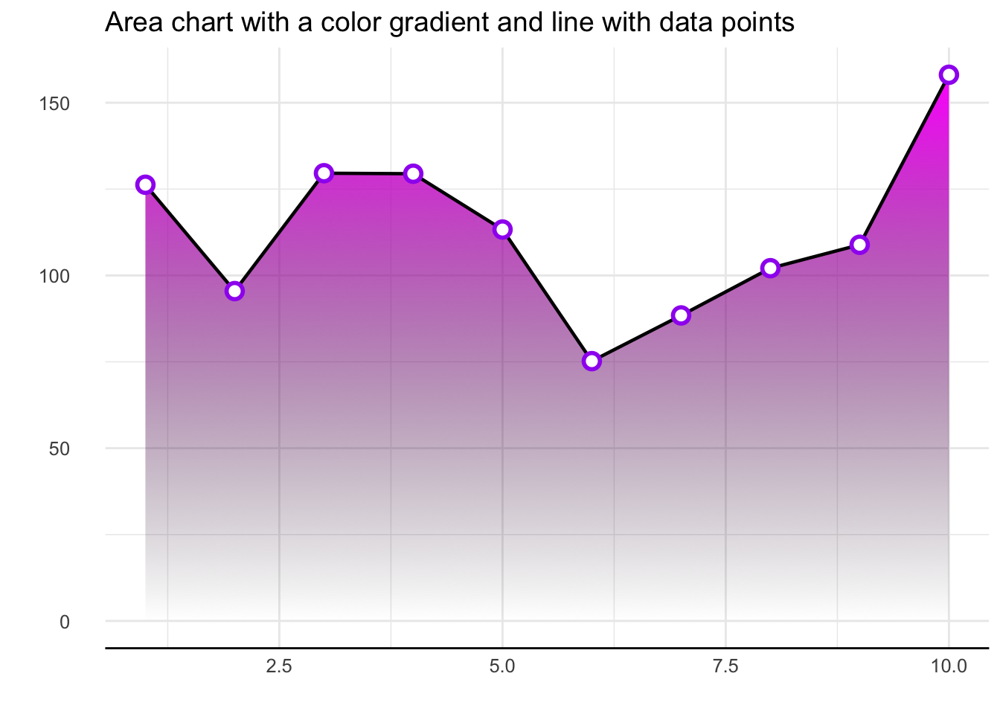

Packages
For this post, we need to load the following libraries:
Dataset
We create a simple dataset with 2 columns, randomly generated thanks
to runif() and rnorm() functions.
Most basic area chart
To create an area chart with R, all we need to do is add the
geom_area() function from ggplot2.
Add a simple gradient color
To add a color gradient in place of the light blue, we need to use the ggpattern library and define which colors will be used for the graph.
The bottom color is white and the top color is
red.
Gradient color with transparency
To add transparency to the graphic, simply use colors that are naturally transparent. For example, here we change white to transparent grey.
The bottom color is a transpaent light grey (#00000010)
and the top color is blue.
Fully customized area chart wiht gradient
If we take what we’ve seen above and add other features like changing
the theme, removing axis lines etc., you end up with an
even more beautiful graph.
In this case, we: - add a black line for the upper part of the area chart - change the theme with the hrbrthemes library - remove axis lines
ggplot(df, aes(xValue, yValue)) +
geom_area_pattern(data = df,
pattern = "gradient",
fill = "#00000000",
pattern_fill = "#00000000",
pattern_fill2 = "magenta") +
geom_line(data = df, colour = "black", linewidth = 0.8) +
geom_point(shape = 16, size = 4.5, colour = "purple") +
geom_point(shape = 16, size = 2.5, colour = "white") +
ggtitle("Area chart with a color gradient and line with data points") +
theme_bw() +
theme(plot.title = element_text(size = 14),
panel.border = element_blank(),
axis.line.x = element_line(),
text = element_text(size = 12),
axis.ticks = element_blank(),
axis.text.y = element_text(margin = margin(0,15,0,0, unit = "pt"))) +
scale_alpha_identity() + labs(x="",y="")
Conclusion
This post explained how to add a color gradient to an area chart using the ggpattern library. For more area chart examples, see the dedicated section.
Related chart types


❤️ 10 best R tricks ❤️
👋 After crafting hundreds of R charts over 12 years, I've distilled my top 10 tips and tricks. Receive them via email! One insight per day for the next 10 days! 🔥